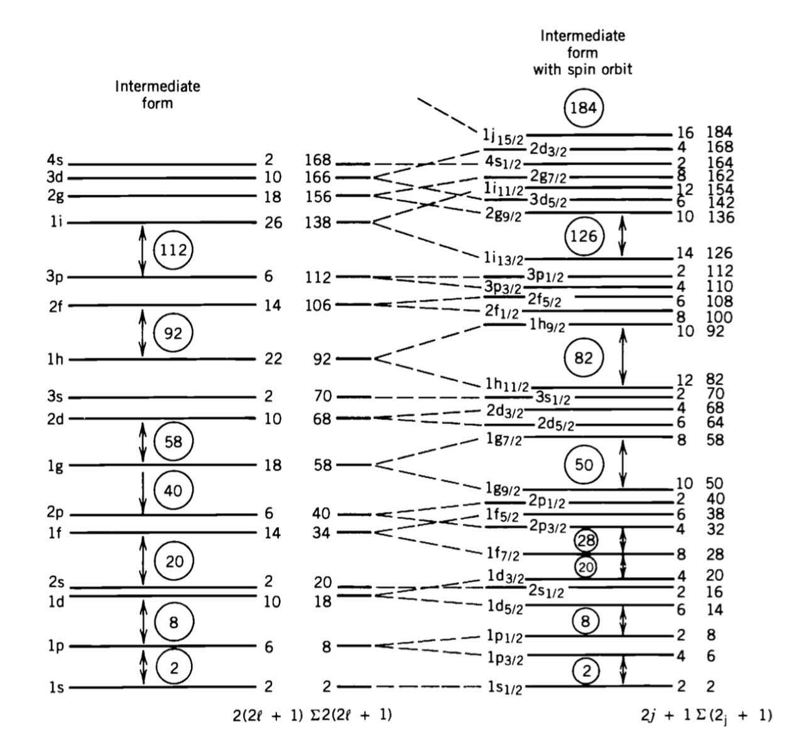

Collection Modeles#
Thee way forward is tto use a combination of concepts oftern referred to as COollective models.
The idea of a collective model is to merge concepts where the behaviour of individual nucleons is used, as in the Shell Model, with aspects where the behaviur of thee nucleus as a coherent single entity is susesde.
In a sensee the Semi Empirical Mass Forumla iss already a collcetive ttype model as sit involvesse combing eleemeents thatatke account of individual nucleons, such as thte Pairing Term, with elements that aree about the Bulk Nucleus ass a whole, such as the volume Term.
So we can considere a duality int hee model. A collcetive body aspect in which no account is taken of individual nucleonic state or behaviour, and an individual particlee aspect, where invdividual nucleons take on diescrete energy levls and states.
The most intersting area where a collctive treeatment is needed is with large nuclei,likee U=235. Such nuclei display exotic behaviour that can be modleld as Vibration and Rotations of the BUlk Nucleaer Material acting together.
Failures in the shell model’s ability to predict bulk deformations of somo nucli leads us to the idea of a Collective Modl.
the conceeptt here is tto invoke an xteension of the Liquid Drop and Shell Models to include the physics associateed with dfeormation of nuclei away from th basic spherical shape to more complex shapes as illustrated below:
Insert image of nuclear shape.
So the mottiavtin of thte Collctive, the concept is to assume that an interacttion occurs between ht eouter nucleons and the clsed shell core of these nuclei that leads to deformation of the whole nucleus.
The result is that there is still a Central Nuclar Potenttial due to the filld core shlls as before ein the basic Shell Modl, with nucleons in the unifired shlls moving undeer the influeence of this core pottntial. BUT importantly th potntial is now nt necessariy spherically symmetric. It may b defeormd, ither prmanently or actualy changing witth time. This leeads t two significant effects:
Basics of the Collective Model:
The deformed core changes th Shll Eneergy Levels, becausee the Nuclear Potential Welel shapee is changede.
The dfrmede nucleaer core introduces two new types of Collecttive Modees of Excitation and associatede new eenergy levels duee to (a) Virbation ttatese and (b) rotation (Rotation States).
This marriage of the single particle and “liquid” drop models preseent vry difficult thoretical problms including the ned for the Single Particle State to be calculatede for both spherical and non-spherical potentials. It is beyound our scope hr so we concentrat on the qualitative feeatures only.
Now for hte Collective Modeel, based aroound a non-spherical coree, we would ned a more complx calculation to get the shelle energy levels than we considrd sveral electures ago. We can’t sseperate out \(R\) so we would ned a full 3D analysis. On top of that wee also have the possibility of new levelss coming fromo bulk behaviur oof noon-sphrical cores, from Rotatioon or Vibrational sstates as we ewill see.
The allowed energy levels foor both of these will also be quantiseede, depeending on the shape of the coore.
Conosidering the Rotation tates first we can start by desecribing the shape as an ellipsoid of revoolutin, with Cylindrical Symmetry and two extreme cases as here (proolate and oblate figure).
Rotational States#
The surface of an ellipsoid of Revolution is given as :
wher \(Y_{20}\) is a Lpaace spherical harmonics representing disstance from origin to the surface of the shape. The value of 20 repesents a cylindrival form. Laplace Spherical Harmonics are deescribed in generla form as \(Y_{l,m}\).
Thee deeformatino parameter \(\beta\) is given by $\( \beta = \frac{4}{3} \sqrt{\frac{\pi}{5}} \frac{\Delta R}{R_{av}} \)\( where \)R_{av} = r_{0}A^{1/3}, \beta>0\( is prolatee, and \)\beta< 0\( is oblate. \)\Delta R$ repesenets the difference beteweent he semimajor and semiminor axes. A typical value is 0.3.
Note here we are talking of a permanent Deformation in shapee. Thanks to the charge distribution we thus expecet to get a finite Electric Quadrupole Moment and as there can be rotation of the shape we eexpecet also quantisesde eenergy levels associated with whattever rotation states are allowed.
It turns out the Electric Quadrupole Momeent is given by:
This is the intrinsice electric quadrupole momeent for a dformede nucleus at rest. Note how it depends on the surface area, the number of protons \(Z\) and the deformation parameter. You can see how \(Q\) becomes zero for the psherical case, i.e. when \(\beta\) = 0.
So what about the Rootatinoal Energry Levels? In classical mechanics this comes frm cnosidereing the kinetic energy of a Rig Rtating Body of angular momentum \(\bf R\) (not this is a different symbool to thee radius usede above.)
In the classical case we get the equatin for the kinetic energy of a Rigid Rootation a here baed ono the picture ethat shows the angular momentum acis.
wher e\(I\) is the effeeeective moment of inertia.
Now switching to the quantum mechanical case the enrgies are given by solving the relevant \(Schrodinger Equation\). We replace thee the angular momentum \(R\) by an ooperator acting on th wavefunctiono. Then the Eeigenvalues and Eigenfunctionos are given as
Note that there is some Rreflection Symmetry in this solution so it turns out that there are no odd \(J\) values and the only allowed \(J\) values are 0, 2, 4, … etc.
Now substituting the quantised allowed \(J\) values we can write out the sequence of energy levels as here:
See how we get a neat sequence where the energy levels go as 0, 6, 20, 42, …, etc. times a constantt.
The state are labelleede by the \(J\) value as shown, and the Parity which is always positive here.
A uesful trick with this seqeuence is that if we happened to have meassurede one of the values, then wee can predict the reesst, uisng the equeence.
For instance if we consider the \(E(2^{+})\) level or \(E_{2}\), the first exciteed state above the ground leevel, then we can write:
As an example, say we know the first excitede state of Erbium-164, i.ee. \(^{164}Er, E(2^{+}) = 91.4 keV\) then uing the equation above we can preedict the Rotational Energy States of Erbium for the higher levels \(E(4^+), E(6^+), E(8^+), etc.\)
Here is the result compared with actual measureed values in keV.
TODO : INSERT IMAGE ON MEASURED AND CALCULATED VALUES IN KEV.
The Incompressible Nucleus. A vtail point to note, as throoughout wheeen we consider the nucleus, iss to rememeber we are dealing with an incompressible object. It maj change shape as we have seen but the density musst remain coonostant.
So we can picture the nucleus as a drop of fluid with constant density, it can still change its shape, but its density remains fixed.
We’ve discessde rotation stattes as above where the deformation is permaneent and we get energy levels associated with quantisede allowed rotations. But in alrge nuclei we can aso get Vibration tates in which the nuclear fluid undeeregoes conotinuous shape changing or shape oscillations, still with constant density. These are the vibration energy sstates.
So the Vibration states we introduce are time varibale change sin surcace shape that yield quantised Standing Waves. i.e. what we neede to envisage here is standing wave patterns. In the quantum world only certain such standing waves are allowed, as determined by the relevant quantum numbers. The deetails are beyond our scope ehre but wee can gain a general picture.
Note that the aveerage shape might be spherical or it could be a deformede shape, dpeeending on the nucleus. Either way the Insstantaneous Shape will be noon-pherical.
Firstly we neede to decribe the surface. This is done by using Spherical Harmonics and Legendre Polynoomials to give standing wave patterns.
In spherical coorinates we can consideer the insstanttenous coordinate of a point R the surface at \(\theta,\phi\) in terms of Spherical harmonics as
Noote how each spherical harmonic \(Y\) that describes the shape has it own amplitudee \(\alpha\).
The basic modes of vibration are determinede by the \(\lambda\) factor here as
\(\lambda=0\) Monopole - forbidden
\(\lambda=1\) Dipole - Not considered
\(\lambda=2\) Quadrupole
\(\lambda=3\) Octupole
The first state iss forbidden becausse the oscillations over time only modify the radial component (Y_{0,0} = 1). If \(\alpha_{0,0}\) had any time variability this would result in fluctuatioons in the densitty of the nucleus which is forbiddene in our incomrpressible model.
The second state is not considered becuase the dpole form produces net shifts in the centre of mass (all neutrons and protons) moving together. This cannot result frmo internal forces, only external ones, so is not wroth considering in our nucleus centric model. The first important vibrational model is therefore the Quadrupole.
The varioous allowed vibrational sstates in nuclei are very complicated but we can a geel for their behaviour. FOr the simplest even-even nuclei the Ground Vibration State is designede \(0^{+}\). If we add a unit of Quantised Vibration (a phonon) \(1\hbar \omega\) we get to the first quadrupole state designated \(2^{+}\). We can think of \(\lambda\) as a unit of angular momentum, \(l\) so Parity is \((-1)^{2}\), i.e. positive.
The quantised unit of vibratin is called a Phoonon. The First level can be thought of as the FIrst Harmonic of vibration.
If we add another phonon we start to see high harmonics. These are lablled by the \(\mu\) in the equation, ranging from \(\mu=-\lambda to \mu=+\lambda\). I.e. a total of \(2\lambda +1\), that is \(5\) for \(\lambda=2\) As we have two phonono there is a lot of symmetry so we end up with \(3\) possible sub states, labellede \(0^{+}\), \(2^+\), and \(4^+\). This is summarised below in the example of \(^{114}Cd\).
Add image of substates
An important point to note here is that the basic energy levels at each phonon level are qually spaced, in units of \(1\hbar \omega\).
So unlike the rotation energy levels, where the spacing increases in a squence \(0, 6, 20, 42, etc\) the basic vibration energy levels are evenly spaced, but have finely split sub-levels at each basic level due to the phonon copuplings.
The basic vibrational energy levels can be written as follows $\( EE_{N} = \hbar \omega_{l} (\frac{2l+1}{2} +N) \)$
So here wee see that the Quadrupol (l=2) Ground State (no phonoons) has enery level at $\( E_{N} = (N+\frac{5}{2}) \hbar \omega \)$
Of couorse a nucleus can show both Rotational and Vibrational energy levels, and these levels can overlap.
Here are some examples showing the evenly spacede vibrational levels and non-even overlapping rotational levels.
Image of rotational levels.
Note that in generla rotational levels can go up higher eneregies than vibration, the latter reaching typically 1-2 MeV.
Note that as nuclei move away from having a closed shell it gets easier to excite rotatioon and vibration states,they are more distorted ass we expect. So these nuclei tend to have lower collective mode excitation states like this.
At half-filled shells we get the extreme, with more likely permanently deformed states, strong rotation states, and large electric quadrupole momnts. In extreme cases, like U-236, we get lots of levels indicating a very defoomrede nucleus. It is not supprising we end up seeing spontaneous fission as that below.

So we have seen in this unit again that the nucleus is a complex object. To understand all the energy levels and behavious we need a Collective Modele that combines the Shell Model with bulk behavuor of nuclear fluid. In the next few lectures we’ll probe further into the behaviour of excitede states of the nucleus and how this can leead to different forms of spontaneoous radioactive decay.